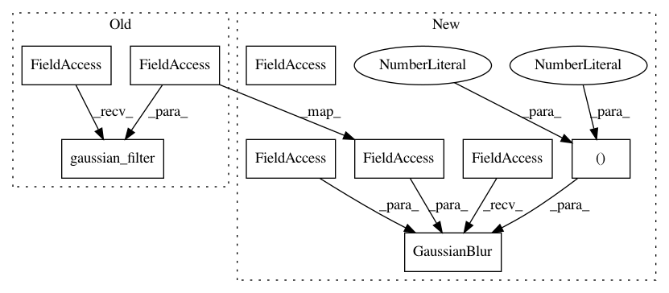

8d0d0c7a6db3904f0222cbe058388a92cf21a548,calamari_ocr/thirdparty/ocrodeg/degrade.py,,printlike_multiscale,#,199
Before Change
selector = random_blotches(selector, 3*blotches, blotches)
paper = make_multiscale_noise_uniform(image.shape, span=(0.8, 1.0))
ink = make_multiscale_noise_uniform(image.shape, span=(0.0, 0.2))
blurred = (ndi.gaussian_filter(selector, blur) + selector) / 2
printed = blurred * ink + (1-blurred) * paper
if inverted:
return 1 - printed
After Change
selector = random_blotches(selector, 3*blotches, blotches)
paper = make_multiscale_noise_uniform(image.shape[:2], span=(0.8, 1.0))
ink = make_multiscale_noise_uniform(image.shape[:2], span=(0.0, 0.2))
blurred = (cv.GaussianBlur(selector, (0, 0), sigmaX=blur, borderType=cv.BORDER_REFLECT) + selector) / 2
if blurred.ndim == 3:
ink = np.repeat(ink[:, :, None], 3, 2)
paper = np.repeat(paper[:, :, None], 3, 2)
In pattern: SUPERPATTERN
Frequency: 5
Non-data size: 9
Instances
Project Name: Calamari-OCR/calamari
Commit Name: 8d0d0c7a6db3904f0222cbe058388a92cf21a548
Time: 2021-02-06
Author: ChWick@users.noreply.github.com
File Name: calamari_ocr/thirdparty/ocrodeg/degrade.py
Class Name:
Method Name: printlike_multiscale
Project Name: Calamari-OCR/calamari
Commit Name: 8d0d0c7a6db3904f0222cbe058388a92cf21a548
Time: 2021-02-06
Author: ChWick@users.noreply.github.com
File Name: calamari_ocr/thirdparty/ocrodeg/degrade.py
Class Name:
Method Name: printlike_fibrous
Project Name: Calamari-OCR/calamari
Commit Name: 8d0d0c7a6db3904f0222cbe058388a92cf21a548
Time: 2021-02-06
Author: ChWick@users.noreply.github.com
File Name: calamari_ocr/thirdparty/ocrodeg/degrade.py
Class Name:
Method Name: noise_distort1d
Project Name: Calamari-OCR/calamari
Commit Name: 8d0d0c7a6db3904f0222cbe058388a92cf21a548
Time: 2021-02-06
Author: ChWick@users.noreply.github.com
File Name: calamari_ocr/thirdparty/ocrodeg/degrade.py
Class Name:
Method Name: binary_blur
Project Name: Calamari-OCR/calamari
Commit Name: 8d0d0c7a6db3904f0222cbe058388a92cf21a548
Time: 2021-02-06
Author: ChWick@users.noreply.github.com
File Name: calamari_ocr/thirdparty/ocrodeg/degrade.py
Class Name:
Method Name: make_fibrous_image